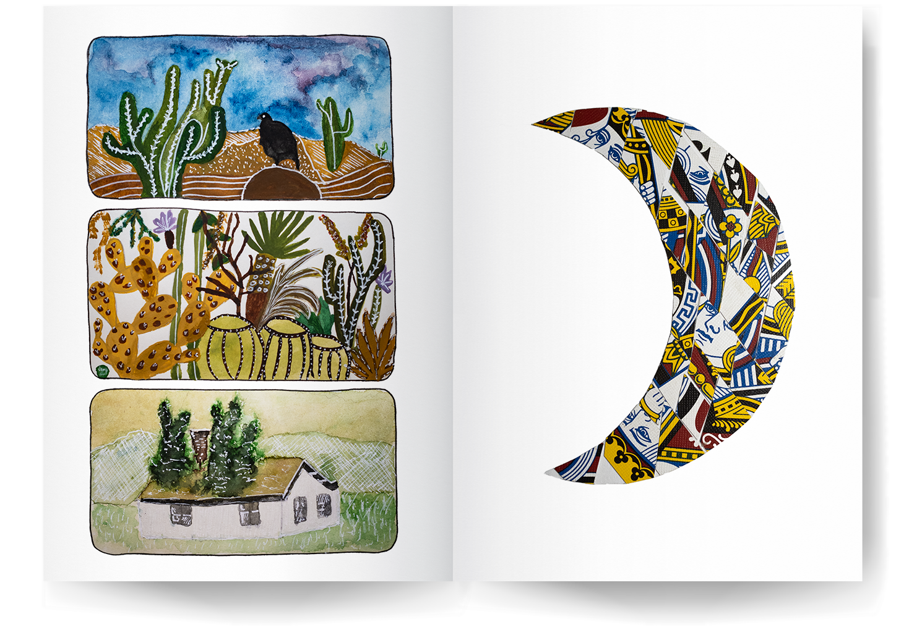

Portfolio
by Gabrielle Michaud
Over the past four years as a full-time paramedic in Montreal, I’ve encountered a wide range of residential settings, inspiring a deep interest in reimagining living spaces to prioritize accessibility and safety. My dream is to design with a focus on fostering community and challenging the culture of mass consumption. I'm inspired by nature to develop beautiful yet functional items and spaces that are built to stand the test of time. The following projects highlight my passion for visual storytelling and purposeful design.
Web Development
I initially developed an interest in design through web development. My goal was to simplify company websites, making their information easily accessible and their navigation intuitive. However, I encountered limitations with web content management systems and the templates they offered. To overcome this, I chose to independently learn HTML, CSS, and JavaScript. Coding a webpage like this portfolio gives me control over every creative aspect.


Illustrations
For this project, my main objective was to achieve maximum visual impact using a minimalistic colour palette in Adobe Illustrator. I focused on creating synergy between the two drawings by emphasizing complementary colours and ensuring clean separation without overlaps.

Brand Design
The challenge of creating business cards is particularly interesting for me as it demands the compression of a wealth of information into a compact medium. This task becomes a transformative process, where the tangible result that emerges reflects the personality of the brand.

Product Design
One of my main sources of inspiration comes from observing designs that I believe can be improved. For instance, a local bird sanctuary introduced its own coffee line a few years ago, but I found the original packaging design to be dull. Wanting to create a more impactful version for the organization, I illustrated a bold Northern Flicker and a refined version featuring a duotone bird.

Paintings
Using a white pen on my watercolour paintings is my favourite technique for creating striking visual effects against transparent paint layers. I also enjoy experimenting with collage, such as this crescent moon crafted by cutting face cards from a broken deck into diamond shapes.

Jewelry
I grew up near a train station in a small town, finding joy in placing coins on the tracks and searching for them the next day. As time passed, I turned my flattened treasures into jewelry by drilling holes into them. Some still bear faint outlines of sailboats and maple leaves. I also loved collecting sea glass as a kid as I've always marvelled at nature's ability to transform discarded items into objects of beauty. I wanted to highlight that transformative power by creating pendants with the rounded glass.


Pottery
I believe that our everyday items should not only be practical but also beautiful. My goal is to craft a complete dining set from clay, transforming mundane aspects of life into sources of joy. The pieces showcased here mark the beginning of this dream. I shaped and trimmed them over four sessions and chose to dip each in two different glazes to evoke a sense of fluidity.

Clothing Design
A few years back, I took part in an event centred around the concept of metamorphosis. My aim was to turn an outdated item into wearable art before the event, and I achieved this by creating a top from cut-up CDs arranged to resemble fish scales. I sewed the fabric to fit my body and meticulously cut the CDs into triangles, securing them with glue.